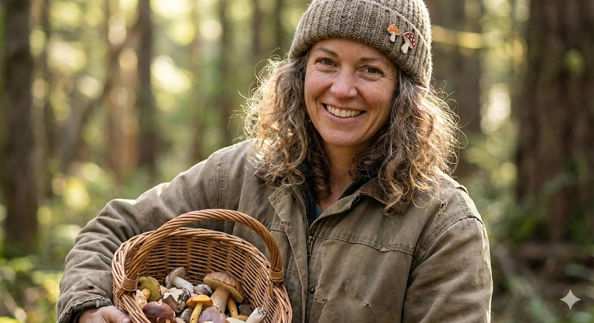
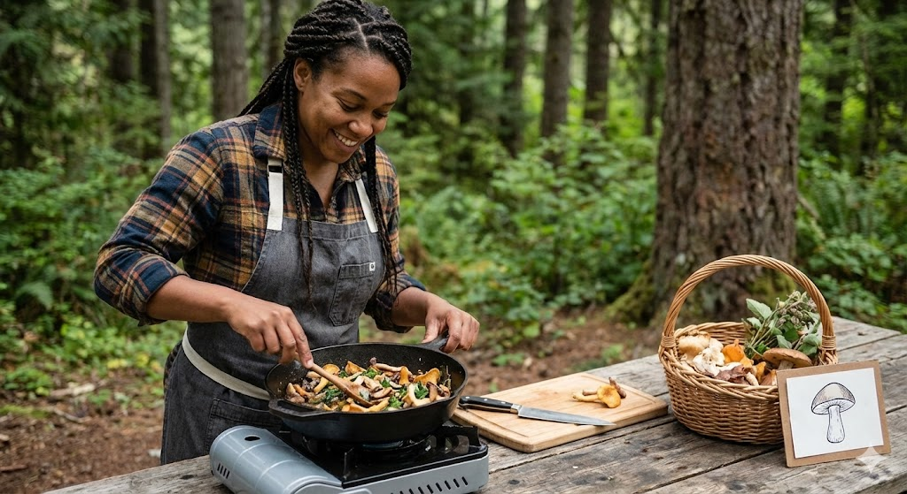
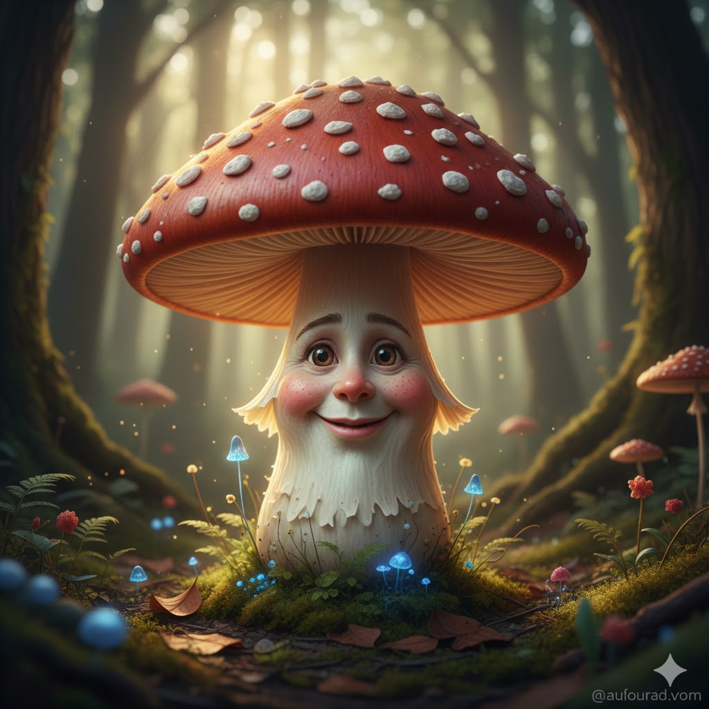

Svamparnas Otroliga Liv: En djupdykning i myceliets psykologi och hur vi kan skapa musik tillsammans
Följ med på en otrolig resa in i myceliets värld och upptäck nya sätt att skapa musik.
Datum: Onsdag 24 december 2025
Tid: 10:00 - 16:00
⚠️ Sista anmälningsdag: 17 december 2025 (1 vecka innan start)
Delta i julfirandet
Räknar ner till dopparedagen...
Länkarna aktiveras 15 minuter innan start.
Träffa Våra Föreläsare

M. Myceliaceae
Mykolog och Svampexpert
M. Myceliaceae har plockat svamp i över 30 år och är specialist på Karljohan och giftiga dubbelgångare. Han delar med sig av sina bästa knep för identifiering.

A. Amanita
Skogskock
A. Amanita fokuserar på det kulinariska. Hon lär dig hur du bäst konserverar, torkar och tillagar olika svamparter för maximal smakupplevelse.
Dagens Agenda 🎅
- 10:00 Välkomsttal och Julglögg (Virtuell)
- 10:30 M. Myceliaceae: Vinter-svampar att plocka nu
- 12:00 Lunchpaus
- 13:00 A. Amanita: Laga mat med torkad svamp till julbordet
- 15:00 Frågestund och Julklappsutdelning
- 16:00 Avslutning
Välkommen till Svampguiden
Här hittar du roliga fakta medans du väntar på webinariet.
Populära Svamparter
Denna sektion kommer att fyllas med information om specifika svampar snart!
Enkla Svamprecept
1. Kantarelltoast (5 min)
Ingredienser:
- 200g färska kantareller
- 1 msk smör
- 1 liten schalottenlök
- Bröd, salt, peppar, persilja
Instruktioner:
- Stek svampen torr, tillsätt smör och lök.
- Krydda och lägg på rostat bröd.
2. Svampsås (10 min)
Ingredienser:
- Svamp, grädde, soja, kryddor
Instruktioner:
- Stek svamp, häll på grädde och koka ihop.
Svampgalleri: Kända Arter

Kantarell

Karljohansvamp

Röd Flugsvamp

Trattkantarell